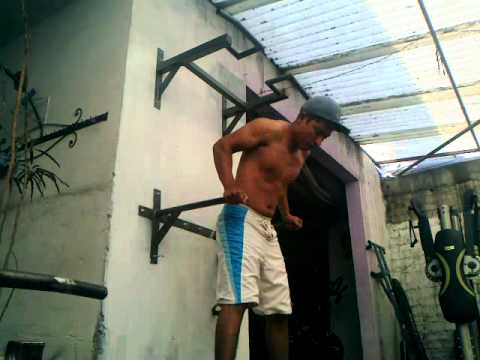

Tipos de Dominadas y Variaciones que puedes hacer en tu entrenamiento
 Ir al contenido Menú principal Artículos Productos Recomendados Guías Premium Alternar menú Guía de Proteína Guía de Alimentacion Asesoramiento AsesoramientoTipos de Dominadas: Variaciones y Accesorios para tu entrenamiento
Por Jcob / Deja un comentario / EntrenamientoHay una gran variedad de tipos de dominadas que una persona puede hacer en su entrenamiento.
Muchas veces solo nos dejamos llevar por las dominadas más populares, comunes y convencionales.
Pero no tienes por que hacer esto.
Puedes escoger entre distintos tipos no muy conocidos, inclusive puedes modificar tus dominadas con algunos accesorio.
En está guía aprenderemos de todos los tipos de dominadas, sean populares o no, que tu puedes realizar en tu entrenamiento.
Pero primero, veamos de por qué deberías de realizar dominadas y qué músculos trabajan.
Veamos.
CURSO MÁXIMOS RESULTADOS:
Por cierto, si quieres aprender más sobre entrenamiento basado en evidencia y llevar tu físico y entrenamiento al siguiente nivel, asegúrate de recibir gratis este curso:
Click aquí para recibir el curso completamente gratis
Tabla de Contenido
Músculos trabajados con Dominadas Distintos tipos de Agarre en Dominadas Dominadas prono convencionales Dominadas agarre Supino. Dominadas agarre Neutro. Dominada con Anillas Dominadas TRX Dominadas Australianas Dominada Tras nuca Dominadas «colgadas» Dominadas pliométricas Dominadas «Kipping». Dominadas al Pecho (CTB) Dominadas Arqueras (Archer) Dominada con una Mano Dominada con una Mano Asistida Dominadas Comando Dominadas en L Dominada en V Dominadas Eccéntricas/Negativas Tipos de Dominadas Asistidas (con Banda TRX Banca) Tipos de Dominadas especiales para Antebrazos (Toallas, Grip Balls y Sogas) Dominada con Lastre y otras maneras de sobrecargarMúsculos trabajados con Dominadas
Las dominadas son utilizadas principalmente para fortalecer la musculatura de la espalda y de los brazos, en particular los bíceps.
Pero es un movimiento un poco más complejo que eso , e inclusive se ha visto en los estudios que trabajan hasta tus pectorales. 1) Dickie, J. A., Faulkner, J. A., Barnes, M. J., & Lark, S. D. (2017). Electromyographic analysis of muscle activation during pull-up variations. Journal of Electromyography and Kinesiology , 32 , 30-36.
La realidad es que las dominadas son un ejercicio «completo», que trabajan desde tus deltoides posteriores hasta tus oblicuos:
Sin embargo, su énfasis recae en la espalda y los bíceps.
(Pero ten en mente que toda tu musculatura será trabajada con ellas, ese es el punto)
Teniendo en mente esto, hay algunos tipos de dominadas que pueden enfatizar otras partes más.
Como tus antebrazos o «core» (abdomen y oblicuos), como veremos más adelante.
Primero, también es importante ver los tipos de agarre en las dominadas.
Distintos tipos de Agarre en Dominadas
Un punto que debes tener en mente son los tipos de agarre que puedes utilizar en las dominadas.
La manera más fácil de recordar es tomar en cuenta la orientación de las palmas.
Hacia donde están viendo?
Agarre Prono: Tus palmas están mirando hacia el lado contrario del que te encuentras, hacia afuera Agarre Supino: Tus palmas están mirando hacia ti. Agarre Neutral: Tus palmas están mirando hacia ellas mismas. Agarre Mixto: Tus palmas están mirando hacia lados opuestos, una hacia a ti y otra hacia afuera. Agarre de Anillas: La orientación de las palmas va a variar durante el recorrido, agarre «libre».
Bien, teniendo todo esto en mente, empecemos a ver todo los tipos de dominadas que puedes utilizar en tu entrenamiento.
Dominadas prono convencionales
Las dominadas convencionales, son las dominadas que uno realiza con agarre prono.
Esto significa que tomas de la barra con tus palmas mirando hacia afuera y tus nudillos mirando hacia ti. (Como la tomarías naturalmente)
Instrucciones:
Mira hacia la barra, y si es necesario, utiliza una banca o salta para tomar de la barra con las manos mirando hacia el lado contrario de tu cuerpo (agarre prono). En cuanto a la distancia entre cada mano, ubica el agarre a una distancia similar a la de la altura de tus hombros, la mayoría prefiere un agarre un poco más abierto que los hombros cuando es una dominada con agarre prono. Jala tu pecho hacia la barra, manteniendo tu cuerpo recto. Los codos deben de apuntar hacia los costados, y no hacia al frente. Lentamente desciende tu cuerpo a la posición inicial, permitiendo que tus brazos se extiendan completamente (sin dejar que tus codos y articulaciones se impacten al hacerlo) Esto es una repetición.Vídeo Demostrativo:
Dominadas agarre Supino.
Las dominadas con agarre supino con una de las variaciones y tipos de dominadas más comunes.
Es lo mismo que una dominada, con la excepción de que tus palmas están mirando hacia ti ( agarre supino).
Cambiar las manos de prono a supino colocan un mayor énfasis en los bíceps.
Vídeo Demostrativo:
Dominadas agarre Neutro.
El agarre «neutro» o neutral es el tipo de dominada que es realizada con las palmas mirando hacia ellas mismas.
Puede ser utilizada como una opción más saludable para tus hombros, en comparación con las barras rectas, si es que tienes algún tipo de lesión de hombro.
Vídeo Demostrativo:
Dominada con Anillas
Si hay un accesorio que brilla con las dominadas , sin duda alguna son las anillas de gimnasia.
Las dominadas con Anillas representan una gran ventaja ya que liberan tus articulaciones de la posición fija que inevitablemente sucede con una barra fija.
Al momento en que las utilices notarás que tus manos tienden a rotar, debido a que están liberadas y pueden tener una trayectoria más natural.
Si dispones de ellas, sería buena idea que experimentes con ellas.
Si no dispones de ellas, por suerte, puedes conseguirlas en tiendas como Amazon .
Y tienen un precio relativamente bajo.
Puedes verlas en Amazon aquí.
Vídeo Demostrativo:
Dominadas TRX
Las Dominadas completa TRX, es prácticamente lo mismo que dominadas con anillas de gimnasia.
El problema de los TRX en comparación a las anillas es que necesitas disponer de algún punto de anclaje bastante alto si quieres mantenerte colgado por completo.
Las anillas por otra parte pueden ser colocadas solo un poco más abajo de una barra.
Es por eso que las anillas la mayoría del tiempo son la opción superior, si es que solo buscas utilizarlas para distintos tipos de dominadas.
Pero si ya dispones de TRX o estás considerando comprar uno puedes realizar cosas como Dominadas Australianas con mayor comodidad, como veremos más adelante.
Puedes ver su precio en Amazon aquí.
(Y el TRX te permite realizar otros ejercicios fuera de solo dominadas, y para entrenamiento en casa , sin duda son la opción superior, por mucho)
Vídeo Demostrativo:
Dominadas Australianas
Este tipo de dominadas es ideal si es que recién estas aprendiendo a realizar dominadas.
Es similar a los que sería un híbrido entre un remo y una dominada.
Instrucciones:
Debes de encontrar una barra horizontal, más baja de lo usual que te permita colocar tus piernas en el suelo y mantenerlas rectas en diagonal. Extiende ambos brazos y toma firmemente de la barra. Alinea tu espina de tal manera que tus pies, piernas y torso formen una linea recta diagonal. Jala tu cuerpo hacia arriba hasta que tu pecho este cerca de tocar la barra. Desciende a la posición inicial. Esto es una repetición.Vídeo Demostrativo:
Versión TRX
Esta versión con el TRX es más práctica de realizar ya que no necesitas encontrar una barra tan baja, y simplemente puedes diminuir o incrementar la altura de los agarres.
También es mejor en tus articulaciones, ya que te permite rotar y liberar tus agarres.
Vídeo Demostrativo:
Dominada Tras nuca
Este es un tipo de dominada con el cual recomiendo tener cuidado.
Si eres nuevo haciendo dominadas o has tenido algún problema de hombro , puede ser mejor no realizar estas.
Sin embargo, para las personas que ya son fuertes en dominadas y tienen hombros saludables, la versión tras nuca puede ser una variación que valga la pena.
Instrucciones:
Comienza mirando la barra, si es necesario, y la barra está muy alta, utiliza una banca o salta. Utiliza un agarre prono, con las palmas mirando hacia afuera. Jala tu cuerpo, pero esta vez debes de asegurarte de llevar la parte trasera de tu cuello hacia la barra, manteniendo tu cuerpo recto, tus codos pueden apuntar hacia los costados o adelante. De manera controlada desciende tu cuerpo a la posición de inicio.Vídeo Demostrativo:
Comentarios.
Si no tienes mucho flexibilidad en los hombros, puede ser un movimiento difícil de realizar para ti, por lo menos de manera cómoda.
Si notas algún tipo de molestia, es mejor que realices dominadas convencionales.
Dominadas «colgadas»
Si quieres asegurarte de que estás realizando un rango de movimiento completo, la dominada colgada es tu mejor opción.
Aquí simplemente te dejas colgar al finalizar una repetición, de tal manera que tus brazos estén completamente extendidos en la parte de abajo, dejando tu cuerpo colgar.
Aquí no se utiliza ningún tipo de impulso o « momentum « , es uno de los tipos de dominadas más estrictos que podrás realizar.
Puedes realizarlo ya sea con agarre supino, neutral o prono, la idea es dejarte colgar, eliminar el impulso y aprovechar al máximo el rango de movimiento.
Vídeo Demostrativo:
Dominadas pliométricas
Una vez que estés cómodo al realizar dominadas, puedes intentar variaciones pliométricas.
Este es un tipo de entrenamiento explosivo, que involucra dejar de agarrar la barra al realizar el movimiento.
Puedes ser creativo, puedes cambiar tu agarre en medio de cada repetición, pasando de prono a supino o dar una palmada, dependiendo de tu nivel.
(Similar a los muchos tipos de flexiones pliométricas que existen .)
Vídeo Demostrativo:
Dominadas «Kipping».
Popularizada por el Crossfit, en este tipo de dominadas estás intentando utilizar la máxima cantidad de impulso y «momentum» posible para balancearte por encima de la barra.
No hay una técnica estricta, pero se intenta ser lo más explosivo posible.
Usualmente involucra impulsarte con la cadera ( extensión de cadera ), y utilizar ese impulso para llevar tu barbilla por encima de la barra.
Instrucciones:
Comienza en una posición totalmente colgado, con brazos extendidos. Tu agarre idealmente sería a la altura de los hombros. Al iniciar el movimiento, empuja tu pecho hacia adelante, el cual debe de sobrepasar tus hombros. Tensa tus piernas y «core» para mantener tus piernas en posición fija a la vez que tu pecho y caderas, y «core» se mueven hacia adelante. Tu cuerpo debe de formar una figura de «banana», donde tu espalda baja formará la curva. Para realizar el despegue hacia la dominada, balancea tu cuerpo hacia adelante y hacia atrás. Pasado las dos balanceadas, en donde tu pecho y caderas han sido jaladas hacia adentro, jala hacia arriba. Continua jalando hasta que tu barbilla se encuentre por encima de la barra. Un punto importante es que tienes que jalar tu cuerpo hacia atrás después de llegar a la parte de arriba de la dominada, ya que puedes golpearte con la barra al momento de descender.Vídeo Demostrativo:
Dominadas al Pecho (CTB)
Las dominadas al pecho, conocidas como CTB, « C hest to B ar», son las dominadas que intentan que en vez de solo sobrepasar la barra con tu barbilla, hagas contacto con la barra.
Aunque no lo parezca es uno de las variaciones más desafiantes, sobretodo cuando se utiliza un agarre prono.
Ya que se requiera una alta cantidad de fuerza y flexibilidad.
Algunas personas que no tengan la flexibilidad o tengan lesiones de hombro, tendrán dificultades para tocar la barra con su pecho.
Sin embargo también existe la versión con «Kipping», popularizada por el Crossfit, de nuevo, en la cual también lleva el nombre de «Butterfly Pull ups», o «Dominadas de Mariposa».
Vídeo Demostrativo:
(Versión estricta)
(Versión Kipping)
Dominadas Arqueras (Archer)
Las Dominadas Arqueras involucra un agarre abierto y solo utilizar un lado de tu cuerpo para elevarte, el otro brazo se mantiene recto.
El nombre nace por que en la parte de arriba parece como si estuvieras en posición de disparar una flecha con un arco.
Este tipo de dominada es muy buena para prepararte para la dominada de una mano.
Instrucciones:
Agarra la barra con las manos en prono, con una agarre más abierto que la altura de tus hombros. Comienza el ejercicio jalando tu cuerpo hacia tu izquierda o derecha, de tal manera que tu brazo derecho se encuentre horizontal con el suelo en la parte de arriba. Desciende de manera controlada y repite con el brazo opuesto, hacia una dirección contraria. Cuando termines ambas direcciones, es una repetición.Vídeo Demostrativo:
Versión con Anillas
Una versión mucho más viable y no tan dura en las articulaciones es la versión con Anillas.
Dominada con una Mano
La Dominada con una Mano es la más impresionante de todas, ya que es uno de los tipos de dominadas más difícil de realizar.
Toma mucha práctica y paciencia adquirir la habilidad de hacer si quiera una
Pero si estás listo para sorprender a las personas y llamar la atención, entonces esta es la dominada que debes de dominar.
Para poder hacer una dominada de una mano, debes de poder hacer entre 15 a 20 dominadas seguidas (con técnica estricta).
Si no puedes hacer eso, es muy probable que no tengas la fuerza suficiente para realizarla.
Al momento de realizarla, la mayoría de personas prefieren utilizar un agarre supino, ya que te ayudará a incrementar la contribución de tus bíceps.
Pero también pueden ser realizadas con un agarre prono.
Cuando realizas una dominada a una mano, experimentarás una cierta cantidad de rotación.
Esta es la razón por la que las personas que ves realizando esto van a jalar hacia los hombros.
Esta es una ventaja de las Anillas de gimnasia , ya que las anillas de gimnasia simplemente rotarán.
Instrucciones:
Comienza mirando hacia la barra, como lo harías en una dominada convencional. Toma de la barra con el agarre que desees, toma aire y prepárate para ejercer máximo esfuerzo. Controla el brazo que no está trabajando ya que tenderá a moverse para balancear tu cuerpo, muchas personas lo colocan recto hacia al frente, pero otras suelen mantenerlo detrás de su cuerpo. Cuando empieces a jalar hacia arriba notarás que te iras hacia un costado y tus piernas tenderán a rotar. Debes de mantener tus piernas y «core» totalmente rígidoz y controlados. El agarre que utilices tendrá un efecto en la dirección de tu cuerpo, si utilizas un agarre prono, tenderás a ir ligeramente hacia el hombro contrarió, con un agarre supino iras más hacia el hombro activo. Eleva tu cuerpo hasta que tu barbilla se encuentre a nivel de la barra.Vídeos Demostrativos:
(Agarre Prono)
(Agarre Supino)
Versión con Anillas de Gimnasia.
En este caso, las Anillas de Gimnasia son superiores.
Esto reduce en gran medida el gran estrés ocasionado en tus articulaciones, así como mejorar tu linea de movimiento, se vuelve más vertical, ya que las anillas simplemente rotarán.
Lo cual es imposible al utilizar una barra.
Vídeo Demostrativo.
Dominada con una Mano Asistida
Esta es la versión más «amigable» (y más fácil) de la dominadas de una mano, pero es una gran manera de progresar a la dominada con una mano «real» (y más difícil)
Aquí utilizarás también una mano, pero tomarás del brazo activo con la mano no activa.
La práctica más común es tomar el brazo por debajo de la muñeca y utilizar un agarre supino.
Esto te permite igual generar fuerza a partir del otro brazo, y mantener una mayor estabilidad.
Instrucciones:
Mirando hacia la barra, agarra la barra con la mano con la que realizaras el trabajo. Idealmente sería de una altura en la cual puedes colocar tus pies sobre el suelo. Antes de empezar el movimiento, toma de tu brazo con tu mano no activa, y emplea un agarre supino, con las palmas mirando hacia ti. Jala tu cuerpo hacia arriba con el brazo de trabajo, a la vez que tu otro brazo jalará con fuerza de tu brazo de trabajo. Elévate hasta que tu barbilla esté a la altura de la barra. Retoma la posición inicial, descansando tus pies en el suelo. Esto es una repetición.Vídeo Demostrativo:
Dominadas Comando
También puedes realizar una dominada con las manos mirando hacia cada una de ellas, tomadas con un «agarre mixto», o un agarre neutral en una misma barra.
Y existe un tipo de dominada donde haces una dominadas con este agarre, alternando de lado a lado, hasta que tu cabeza sobrepase la barra y toque tu hombro.
Instrucciones:
Párate de costado a una barra, de tal manera que la linea de tu hombro y la barra formen un ángulo de 90 grados. Toma la barra con las palmas mirando de manera contraria y una después de la otra. Los pies deben de dejar de tener contacto con el suelo. Jala tu cuerpo hacia un lado de la barra, manteniendo tus codos cerca del cuerdo. Levanta tu cuerpo hasta que tus hombros toquen la barra a uno de los costados. Controla el regreso a la posición inicial hasta que tus brazos se encuentren extendidos por completo. Repite esta vez en el lado contrario, con el hombro contrario tocando la barra. Cuando completes ambos lados, es una repetición.Vídeo demostrativo:
Dominadas en L
Combina una dominada con una elevación de piernas mantenida de manera isométrica.
Es por eso que lleva el nombre de Dominada «L», por que hará que tu cuerpo adopte una forma de «L».
Es fácil de aprender, pero es más desafiante que una dominada convencional, y esto es por 3 razones:
Al levantar las piernas al frente tuyo, cambia el centro de gravedad, lo que hace el ejercicio más difícil. Incrementa la involucración del «core» (Abdominales/Oblicuos) en particular la zona baja. Es más difícil generar impulso de tu cuerpo y tus caderas, como lo serían en una dominada «kipping».También son una buena opción si no dispones de una barra muy alta!
Instrucciones:
Déjate colgar de una barra, y mientras estés colgado eleva tus piernas haciendo que estén paralelas al suelo. Cierra por completo las rodillas y apunta tus pies de tal manera que te permita extender por completo tus piernas al frente tuyo (y formar la «L»). Mantén esta posición de «L» mientras realizas una dominada. Jale tu cuerpo hasta que tu barbilla sobrepase la barra, desciende de manera controlada hasta que retomes la posición de colgado inicial, sin perder la posición en «L». Esto es una repetición.Vídeo Demostrativo:
Dominada en V
Esta es una versión similar a la Dominada en L, pero un poco más difícil.
Esta vez intentas mantener una posición en V con tus piernas.
Esta posición tiene a ser más demandante en tu «core», y cambia tu centro de gravedad.
Va a tender a inclinarte ligeramente hacia atrás, si te inclinas mucho hacia atrás empezará a simular un remo.
Instrucciones:
Déjate colgar de una barra, y mientras estés colgado eleva tus piernas haciendo que estén paralelas al suelo. Cierra por completo las rodillas y eleva tus pies por encima de paralelo, de tal manera que te permita extender por completo tus piernas al frente tuyo (y formar la «V»). Mantén esta posición de «V» mientras realizas una dominada. Jala tu cuerpo hasta que tu barbilla sobrepase la barra, desciende de manera controlada hasta que retomes la posición de colgado inicial, sin perder la posición en «V». Esto es una repetición.Vídeo Demostrativo:
Dominadas Eccéntricas/Negativas
Aquí simplemente se busca realizar cualquier tipo de Dominadas que escoges realizar pero utilizando una fase eccéntrica/negativa lenta.
Esto es ideal si es que aún no se es capaz de realizar una dominada convencional.
Ya que solo realizas la parte eccéntrica (bajada) sin realizar la fase concéntrica (subida), la cual es más difícil de realizar.
Instrucciones:
Con ayuda de una banca o una caja, toma una posición en donde te puedas colocar por encima de la barra. Debes de empezar en la parte de arriba, donde terminarías de subir en una dominada convencional. Despega tus pies de la banca o caja, dejándote colgado en la posición de arriba. Lentamente empieza a descender, hasta que tus pies toquen el suelo. Esto es una repetición. Para hacer otra repetición debes de retomar la posición inicial de nuevo con ayuda de la banca o caja.Vídeo Demostrativo:
Tipos de Dominadas Asistidas (con Banda TRX Banca)
La Dominada asistida con banda es un tipo de dominada principalmente para personas que quieren disminuir la dificultad de una dominada convencional.
Ya sea por que no pueden hacer aún una, o quieren hacer más repeticiones.
Puedes utilizar cualquier tipo de banda elástica, pero usualmente se utiliza una Banda verde como esta , que tiene mayor resistencia que otros tipos de bandas y tiene un diámetro ideal para que sea anclada a tu cuerpo.
Puedes ver su precio en Amazon aquí.
Se realiza anclando la banda en la barra en que realizarás las dominadas y anclar el otro extremo en tus piernas, ya sea en la base de tus pies o en tus rodilla flexionadas.
Vídeo demostrativo:
Dominada Asistida con TRX
La dominada asistida con el uso de un TRX tiene la ventaja de poder controlar la altura de los agarres, a diferencia de con una barra fija.
Lo cual te permite progresar hacia una dominada convencional o TRX completa, simplemente subiendo más los agarres, incrementando la inclinación de tu cuerpo.
Lo que hace que se incremente el peso con el que contribuye tu cuerpo en el movimiento.
Vídeo Demostrativo:
Dominada Asistida con Banca
Esta es una manera bastante efectiva de disminuir la carga de una dominada convencional y poder realizar más repeticiones.
Simplemente debes de colocar tus pies en una banca o caja, lo cual reducirá tu peso corporal y la resistencia de la dominada.
El problema será encontrar una barra fija que tenga una altura adecuada, así que muchas veces es utilizada una barra para pesas dentro de una jaula de sentadilla, o en la máquina Smith.
Vídeo Demostrativo:
Dominada Asistida con Máquina.
Algunos gimnasio, usualmente comerciales, disponen de máquinas específicamente diseñadas para asistirte en tus dominadas.
Simplemente colocas tus piernas sobre una plataforma que te empujará hacia arriba.
Vídeo Demostrativo:
Tipos de Dominadas especiales para Antebrazos (Toallas, Grip Balls y Sogas)
Estos son los tipo de dominadas dedicadas más al entrenamiento de antebrazos.
No los recomiendo si tu objetivo es entrenar la musculatura de la espalda y bíceps, ya que solo limitará tu habilidad de sobrecargarlos.
Pero si quieres intentar algo nuevo, y quieres desarrollar antebrazos fuertes y grandes, pueden ser una buena opción.
Dominadas con Toalla.
Vídeo demostrativo:
Dominadas con Grip Balls
Los Grip Balls son un accesorio para dominadas que te permite colgar unas bolas en un barra, y ser capaz de colgarte de ellas.
Esto te permite cambiar radicalmente la manera en que ejerces fuerza para mantenerte colgado.
Son ejercicios más dedicados a personas que practican escalamiento.
Por suerte no son accesorios muy caros, y pueden ser una nueva manera de experimentar.
Puedes ver su precio aquí en Amazon.
Vídeo Demostrativo:
Dominadas con Sogas.
Similar a las dominadas con toalla, esta vez simplemente utilizas sogas.
Si tu gimnasio dispone una soga y eres capaz se hacerla pasar por encima de una barra, puedes tomarlas de ambos lados, y no es muy distinto a utilizar toallas.
Vídeo Demostrativo:
Dominadas con Fat Gripz.
Si también quieres trabajar tus antebrazos, puedes optar por incrementar el Diámetro de la barra en la que realizas dominadas, ya que esto se ha visto que incrementa la activación de tus antebrazos.
Si tienes acceso a ellas, puedes utilizarlas en tu entrenamiento.
Si no, puedes comprarlas en tiendas como Amazon.
Y Puedes aprender más sobre esto aquí:
FAT GRIPZ: FUNCIONAN? CUÁNDO Y CÓMO DEBEN DE SER UTILIZADOS (BIEN)
Dominada con Lastre y otras maneras de sobrecargar
No hay muchas maneras de sobrecargar diversos ejercicios de peso corporal.
Pero utilizar lastre también llamado «cinturón de inmersión» es la manera ideal para hacerlo , por mucho.
Si tu gimnasio no tiene un lastre que puedas utilizar, es tu deber comprarte uno , y ni siquiera es broma.
Cuanto antes puedas ser capaz de sobrecargar las dominadas, mejor.
No tiene sentido comprometer tu progreso por falta de equipo, que podrías conseguir tu mismo.
Ni siquiera debes de ser muy fuerte en dominadas y debes de «hacer 10 o 12 repeticiones» o algún número arbitrario, para empezar a utilizar lastre.
Esto es solo una excusa para no sobrecargar las dominadas, o acaso uno espera a poder hacer 10 a 12 sentadillas con cierto peso para recién incrementar el peso?
Siempre es una cuestión de equipamiento.
Con tal de que puedas hacer entre 5 dominadas, ya puedes sobrecargarlo con lastre.
Muchas personas piensan que debes de colgar siempre, 20kg o por lo menos 10kg o algo así.
Pero puedes colgar algo como 1kg y realizar 5 dominadas por ejemplo.
Estarías pasando de 5 dominadas sin peso, a 5 dominadas con 1kg.
Después simplemente incrementas el peso, y será cuestión de tiempo hasta que puedas hacer 10kg+ por 5 dominadas.
Volviéndote más fuerte y ganando más peso en el camino.
Y si quieres volverte verdaderamente fuerte en dominadas
No hay otra manera que ser capaz de colgar una gran cantidad de peso, y el único accesorio capaz de permitirte esto es el lastre.
Otro punto importante es que cuanto antes mejor, ya que hacer dominadas con lastre tiene una técnica ligeramente distinta a hacerlo solo con tu peso corporal, sin nada colgado entre tus piernas.
Así que si tienes lastre, haz uso de el.
Si no solo cómprate uno te servirá toda tu vida, si es que compras uno de calidad como este .
Es un accesorio esencial que todos deben de tener.
Puedes ver su precio en Amazon aquí.
Vídeo Demostrativo:
Chaleco con peso
Por mucho el Chaleco con peso es el mejor aliado de los movimientos de cuerpo corporal.
Esto es debido a que prácticamente el peso es integrado en tu cuerpo, a diferencia de utilizar un lastre, donde el peso estará colgando de tu cuerpo.
Esto evita que cambies tu centro de gravedad, más importante aún te permite sobrecargar las dominadas en algunos movimientos que normalmente no podrías hacerlo con un lastre.
Por ejemplo, en «Dominadas Arqueras», donde tu cuerpo también se desplaza de manera horizontal.
El problema es que muchas veces debes de conseguir uno tu mismo, rara vez los gimnasios convencionales los tendrán.
Pero si de verdad te gustan los movimientos en base a tu peso corporal, un chaleco con peso es la mejor opción, por mucho.
Solo no te dejes llevar por chalecos con un precio excesivo que tienen un diseño llamativo
Con tal de que tengan peso y te permitan incrementar el peso hasta algo como 40-50kg , c umplen su función y puedes optar por algunos no muy caros como este.
Puedes ver su precio en Amazon Aquí.
Vídeo Demostrativo:
Con una mancuerna entre los pies.
Si no dispones de ningún tipo de accesorio o lastre para sobrecargar el peso, puedes utilizar una mancuernas en los pies, simplemente debes de anclar la mancuernas con la parte superior de tus pies.
En mi experiencia y la de mis clientes, alrededor de 20kg suele ser el máximo que podrás mantener tomados con tus pies de manera cómoda.
También dependerá de la forma de la mancuernas.
Muy a parte de las logísticas de hacer esto, también te fuerza a cambiar tu técnica, ya que tendrás ahora que tener las piernas rectas.
Pero, de nuevo, si no hay otra manera de sobrecargarlo es una opción viable.
Mochila
Utilizar una mochila también es viable, pero solo debe de ser cuando seas forzado a hacerlo.
Es decir si es que no tienes ninguna otra forma de sobrecargarlo.
No es ideal por que coloca el peso detrás tuyo, y jala tu cuerpo desde tus hombros, a diferencia de un lastre que jala tu cuerpo desde tus caderas.
Si debes de realizar dominadas con mochila, puedes utilizar sacos de arroz, botellas de agua y cualquier objeto que represente peso.
Cadenas
Otra manera es utilizar cadenas, y colocarlas en tu cuello.
Un punto bonus es que se ven genial y «hardcore», si tienes cadenas, pues dale un intento.
El único inconveniente es la cantidad de peso que podrás hacer, ya que utilizar muchas cadenas sobre tu cuello o usar grandes cadenas, puedes meterse en el camino al hacer una dominada.
Espero este artículo te haya servido, y ya ponte a hacer dominadas!.
JcobPD: si quieres que trabajemos juntos en mejorar tu físico puedes aplicar a mi asesoramiento personalizado.
Te gustó el artículo? Forma parte del curso Gratuito llamado -Máximos Resultados- . Y Aprende mucho más sobre entrenamiento y nutrición junto con cientos de personas.
Si tienes alguna pregunta o quieres aportar algo, puedes hacerlo en los comentarios de abajo.
Referencias Bibliográficas [ + ]
↑ 1 Dickie, J. A., Faulkner, J. A., Barnes, M. J., & Lark, S. D. (2017). Electromyographic analysis of muscle activation during pull-up variations. Journal of Electromyography and Kinesiology , 32 , 30-36.Artículos Relacionados:
126 Tipos de Flexiones distintas y variaciones que puedes hacer (Guía) Tipos de Cardio: Cuál es el mejor para ti y el que te ayudará más? (Guía) Tipos de Fibras musculares: Características, Hipertrofia y Entrenamiento 43 Tipos de Sentadillas Que Puedes Hacer en tu Entrenamiento (Escoge) Straps para gym: Función, Beneficios, tipos, son necesarios? - Guía simple Proteína en polvo: Qué es, Para qué sirve, Tipos, Cuál comprar (Guía)Navegación de entradas
← Entrada anterior Entrada siguienteSobre el autor
Jcob
Hey, Mi nombre es Jcob creador de Realidad Fitness. Soy graduado en Nutrición y Dietética, y me gusta entrenar. A través de contenido, vídeos, libros y mi asesoramiento personalizado he ayudado a muchas personas a alcanzar sus objetivos en cuanto su físico y su salud. Realidad Fitness participa del programa de asociados de Amazon Services LLC, un programa de afiliacion diseñado para generar ingresos al incluir promoción y links hacia Amazon.com. Copyright © 2021 Realidad Fitness Políticas de Privacidad – Términos y Condiciones Disclaimer Médico Contacto Cerrar el diálogoSesión caducada
Por favor, accede de nuevo. La página de acceso se abrirá en una pestaña nueva. Después de acceder puedes cerrarla y volver a esta página.
Usamos cookies para asegurarnos que te ofrecemos la mejor experiencia de navegación. Si aceptas o continúas navegando significa que consientes su uso. Leer más . Aceptar